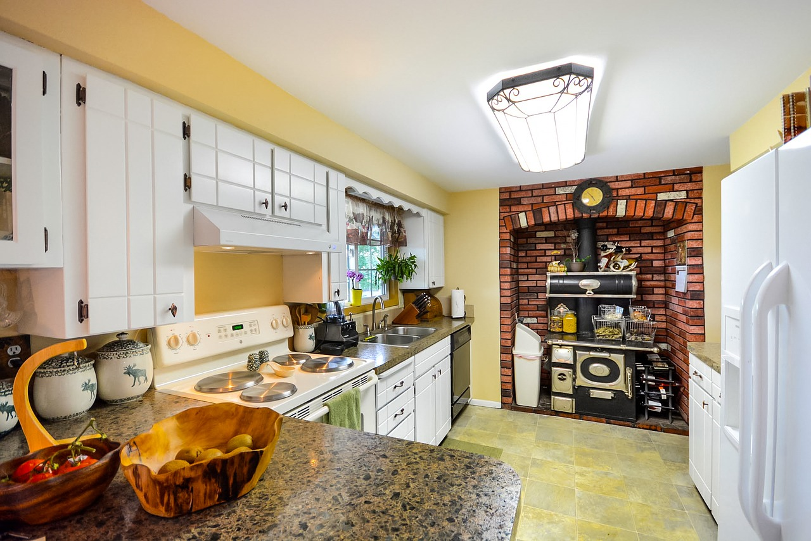
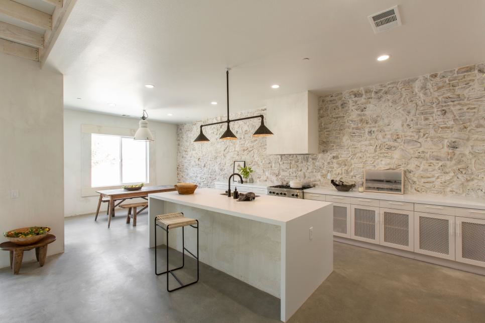

Em primeira instância temos uma cozinha com uma arquitetura moderna projetadada por uma empresa denomindada timmaia, com varios tons de cinza. E logo após há uma cozinha com um toque mais rústica. 
Na imagem três há um cozinha com um estilo mais vintage, e do lado observamos um designer minimalista feito pela Leanne Ford.